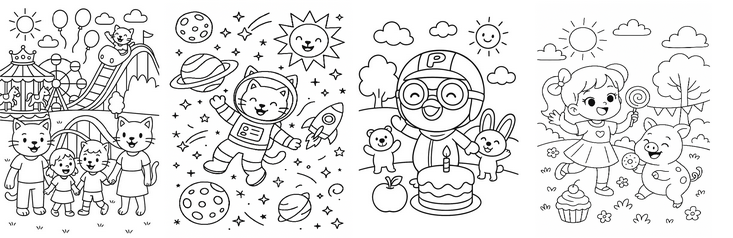
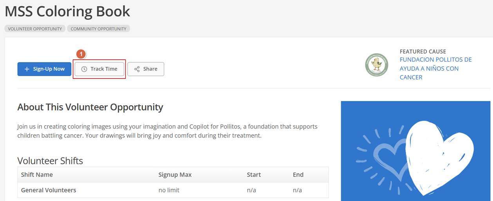
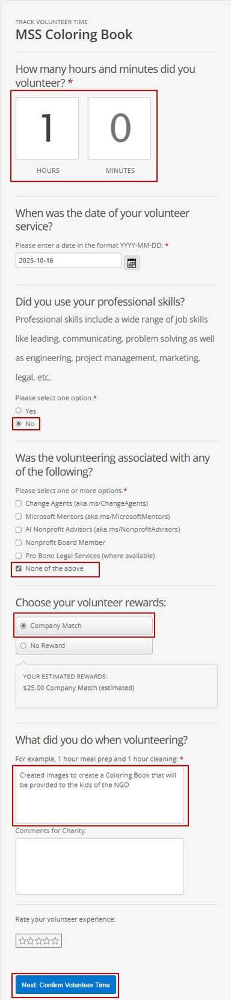
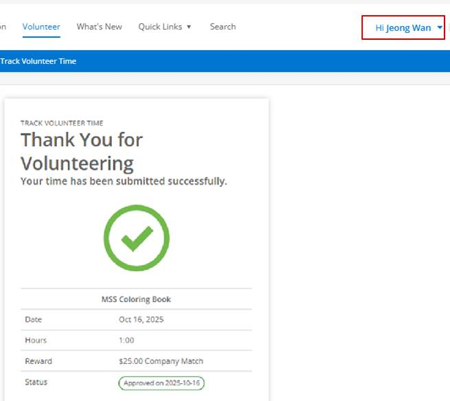

<style>
	
root { color-scheme: light dark; }
  /* body { background: #fff; color: #222; } */
  /* ... 기존 스타일 ... */

	html, body { margin: 0; padding: 0; }
  	.stage-content { box-sizing: border-box; padding: 16px; line-height: 1.6; font-family: system-ui, -apple-system, Segoe UI, Roboto, Arial, sans-serif; }
	.stage-content h1 { margin: 0 0 .75rem; font-size: 2rem; }
	.stage-content h2 { margin: 0 0 .75rem; font-size: 1.25rem; }
	.stage-content h3 { margin: 1.25rem 0 .5rem; font-size: 1.1rem; }
	.stage-content ol { padding-left: 1.25rem; }
	details.fold summary { cursor: pointer; }
	details.fold .fold-body { margin-top: .5rem; }
	.note { background: #fff8e1; border: 1px solid #facc15; color: #6b5900; padding: .75rem .9rem; border-radius: 8px; margin: 1rem 0; }

	.prompt {
    background: #f3f4f6;
    border: 0px solid #797a99;
    box-shadow: 0 2px 6px rgba(99, 102, 241, 0.2);
    padding: 6px 16px 16px 16px; /* 상단만 8px로 줄임 */
    border-radius: 10px;
    margin: 1rem 0;
	text-indent: 0;
    font-size: 1.125rem;
    /* text-indent: 1rem; */
    font-weight: bold;
	
}

.prompt pre {
    /* background: #f3f4f6; */
    border: 2px solid #797a99;
    padding: 12px;
    border-radius: 8px;
    white-space: pre-wrap;
    word-break: break-word;
    margin: .5rem 0 0;
	line-height: 2.0; /* 줄 간격을 넓힘 */
}

/* 다크모드 스타일 추가 */
@media (prefers-color-scheme: dark) {
   body { background: #181818; color: #f2f2f2; }
  .prompt {
    background: #23272e;         /* 어두운 배경 */
    color: #f2f2f2;              /* 밝은 글자색 */
    border-color: #444a;         /* 테두리도 어둡게 */
    box-shadow: 0 2px 6px rgba(99, 102, 241, 0.12); /* 그림자도 살짝 어둡게 */
  }
}


	/* .prompt pre { background: #f3f4f6; border: 1px solid #e5e7eb; padding: 12px; border-radius: 8px; white-space: pre-wrap; word-break: break-word; margin: .5rem 0 0; } */
</style>
<script>
	(function(){
		function getDocHeight(){
			var d = document;
			var body = d.body, html = d.documentElement;
			return Math.max(
				body.scrollHeight, body.offsetHeight,
				html.clientHeight, html.scrollHeight, html.offsetHeight
			);
		}
		function postSize(){
			var h = getDocHeight();
			parent && parent.postMessage && parent.postMessage({ type: 'stage-iframe-size', height: h }, '*');
		}
		window.addEventListener('load', postSize);
		window.addEventListener('resize', function(){ setTimeout(postSize, 50); });
		// Respond to ping from parent
		window.addEventListener('message', function(e){ var d=e&&e.data; if (d && d.type==='stage-iframe-ping') postSize(); });
		// Observe DOM changes
		var mo = new MutationObserver(function(){ setTimeout(postSize, 30); });
		mo.observe(document.documentElement || document.body, { childList: true, subtree: true, attributes: true, characterData: true });
	})();
</script>

<section class="stage-content" aria-labelledby="st1-title">
	<h1 id="st1-title">Stage 1. MSS Coloring Book 2025 Giving Campaign</h1>
	<p>이 활동은 마이크로소프트의 2025 Giving Campaign의 일환으로, 직원들이 자발적으로 참여하여 창의적인 컬러링북 이미지를 만들고, 이를 통해 소외된 아동들에게 기쁨을 선사하는 동시에, 의미 있는 사회적 기여를 실천하는 것을 목표로 합니다. </p>
	<h2>❤️ 주요 목적 및 의미</h2>
	<ul>
		<li><b>나눔과 기부 문화 확산:</b> 직원들이 직접 만든 컬러링북을 통해, 기부와 봉사의 가치를 체험하고 확산합니다.</li>
		<li><b>지원 대상:</b> 이번 활동을 통해 모아진 컬러링북은 코스타리카에서 암 진단을 받은 아동과 그 가족을 지원하는 비영리단체 Pollitos de Hierro에 전달됩니다. 이 단체는 17년간 정서적 돌봄, 영양 지원, 임시 거처 제공 등 다양한 방식으로 200여 가족과 500여 명의 아동을 돕고 있습니다.</li>
		<li><b>참여의 의미:</b> 참가자들은 단순히 그림을 그리는 것을 넘어, 자신의 시간과 재능을 기부함으로써 아동들에게 희망과 용기를 전하고, 마이크로소프트의 매칭 프로그램을 통해 기부 효과를 극대화할 수 있습니다.</li>
		<li><b>연중 지속되는 나눔:</b> 10월 한 달간 집중적으로 진행되지만, 기부와 봉사는 연중 언제든 참여할 수 있으며, 모든 활동 시간은 자원봉사 시간으로 기록되어 추가적인 지원으로 연결됩니다.</li>
	</ul>
	<h2>💖 활동 방식</h2>
	<ul>
		<li>팀 단위로 마이크로 자원봉사(마이크로볼런티어링) 활동을 선택해 참여합니다.</li>
		<li>Copilot을 활용해 아동용 컬러링북 이미지를 생성하고, 완성된 작품을 제출합니다.</li>
		<li>모든 참여자는 자신의 봉사 시간을 시스템에 기록하여, 회사의 매칭 기부 혜택을 받을 수 있습니다.</li>
	</ul>
	<div class="note" role="note">
		<strong>한줄요약</strong> ▶ 코파일럿을 이용해 아동용 컬러링북 이미지를 생성하고, 완성된 작품을 제출합니다. <br/>
		참여자는 자신의 봉사 시간을 시스템에 기록하여, 회사의 매칭 기부 혜택을 받을 수 있습니다.<br/>
		
	</div>

	<hr />

	<h1>💝 자 이제 같이 해봐요!</h1>
	<h2>1️⃣ 첫번째 단계, 컬러링북 이미지 생성하기</h2>
	<ol>
		<li>
			<details class="fold" open="open">
				<summary><a href="https://m365.cloud.microsoft/chat/" target="_blank">https://m365.cloud.microsoft/chat/</a>를 클릭하여 Copilot Chat으로 이동하십시오.</summary>
				<div class="fold-body">
					
				</div>
			</details>
		</li>
		<li>아래의 샘플 프롬프트를 입력합니다. [대괄호]로 싸여 있는 부분을 취향에 따라 수정하십시오. (대괄호는 지우시고요)</li>
		<li>[대괄호] 내용을 창의적으로 변경해보면서 마음에 들 때까지 다시 생성해 봅니다.</li>
	</ol>

	<div class="prompt" aria-label="생성 프롬프트">
		<h3>[샘플 프롬프트]</h3>
		<p>안녕하세요. 당신은 전문 일러스트레이터입니다. 어린이 색칠공부 책에 사용할 흑백 선화 그림을 한 장 그려 주세요. 그림은 밝고 즐겁고 생동감 있는 분위기를 담아야 합니다. 주제는 <font color="#ff0000">[여기에 주제 입력]</font>. 어린이가 좋아할 요소(예: 캐릭터, 동물, 음식, 풍경, 축제 등)를 포함해 주세요. 디자인은 단순하고 색칠하기 쉬워야 하며, 행복한 느낌을 전달해야 합니다. 명암이나 색상은 넣지 말고, 굵고 선명한 윤곽선으로만 표현해 주세요.</p>
	</div>

	<hr />
	<h2>2️⃣ 두번째 단계, 기부시간을 입력하여 회사의 매칭기부 혜택 받기</h2>
	<ol>
		<li><a href="https://microsoft.benevity.org/volunteer/91035" target="_blank">My Giving Portal</a>을 클릭하여 My Giving 포탈로 이동하십시오. 물론 회사계정으로 로그인하시면 됩니다.</li>
		<li>
			[Track Time] 버튼을 클릭해 자신의 기부 시간을 입력하고, 회사의 매칭 기부 혜택을 신청합니다.<br/>
			
		</li>
		<li>
			What did you do when volunteering? 란에는 다음을 입력해주시면 됩니다.<br/>
			<i>"Created images to create a Coloring Book that will be provided to the kids of the NGO"</i><br/>
			
		</li>
		<li>
			완료되었습니다.<br/>
			
		</li>
	</ol>

	<hr />
	<h2>3️⃣ 세번째 단계, 이미지 제출하기</h2>
	<p>완성된 컬러링북 이미지를 아래의 제출 링크로 통해 제출합니다.</p>
	<button type="button" onclick="window.open('https://forms.office.com/r/CvnhkueQsw')">[클릭하세요] Stage 1 - 이미지 제출</button>
	<p>추가로 지금 이벤트를 진행중인 팀즈미팅의 챗룸에도 올려주세요!! 😊</p>

	<hr />
	<p>🗝️ 수고하셨습니다. 던전관리자가 다음 스테이지로 가는 암호를 정해진 시간에 공지할 것입니다.</p>
</section>
